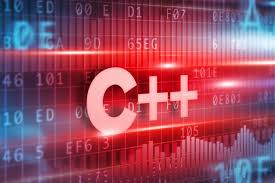

C++

- C is a high-level programming language that was developed in the mid-1970s.
- It was originally used for writing Unix programs, but is now used to write applications for nearly every available platform.
Compared to most previous languages, C is easier to read, more flexible (can be used for a wide variety of purposes),
and more efficient at using memory.
- C++, pronounced "C plus plus," is a programming language that was built off the C language.
The syntax of C++ is nearly identical to C, but it has object-oriented features,which allow the programmer to create objects within the code. This makes programming easier,
more efficient, and some would even say, more fun. Because of the power and flexibility of the language,most software programs today are written in C++.
- C++ is a very popular language for performance-critical applications that rely on speed and efficient memory management.
It’s used in a wide range of industries including software and game development, VR, robotics, and scientific computing.
- C++ was designed with an orientation toward system programming and embedded, resource-constrained software and large systems,
with performance, efficiency, and flexibility of use as its design highlights